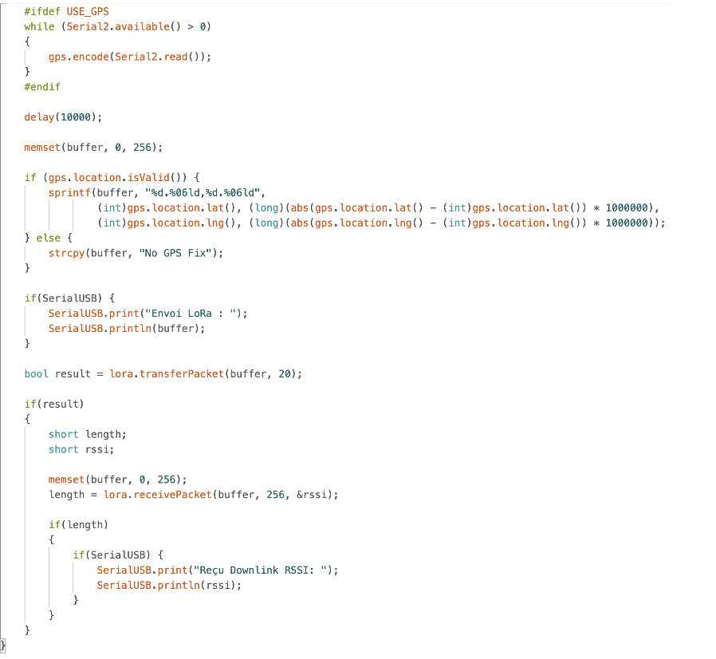
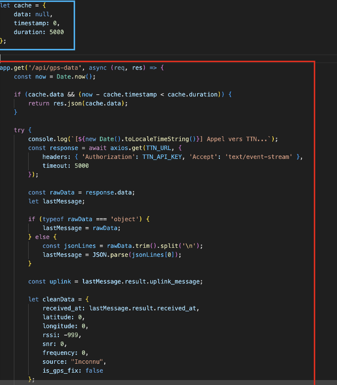
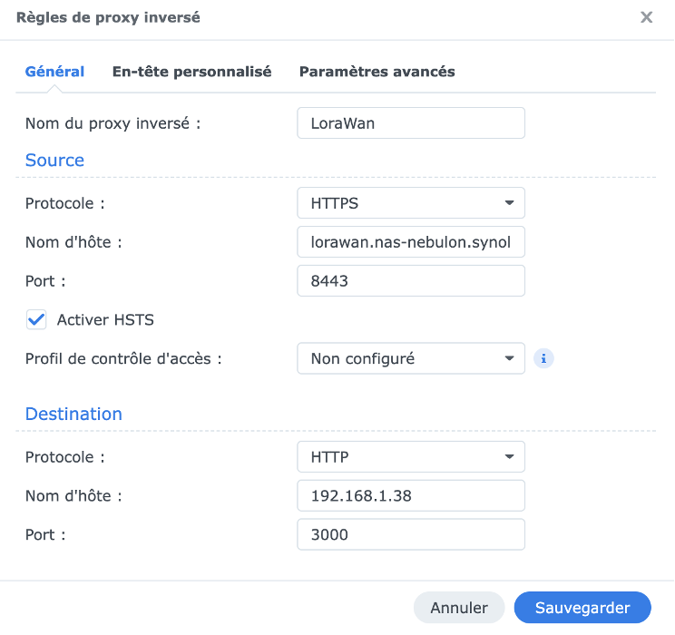

📱 App Course d'Orientation IUT
À propos du projet
Projet IUT fonctionnel et déployé ✅
Application mobile et web complète pour une course d'orientation. Nous avons développé une solution iOS/Android
qui communique avec un serveur backend connecté à TTN (The Things Network) en LoRaWAN.
Les données de géolocalisation et des capteurs sont récupérées en temps réel et affichées sur une interface web intuitive.
Stack Technologique
Fonctionnalités principales
📱 Applications Mobile (iOS & Android)
Applications natives avec géolocalisation GPS en temps réel. Les coureurs peuvent tracker leur position et recevoir des waypoints de la course directement sur leur téléphone.
📡 Communication LoRaWAN / TTN
Serveur backend connecté à The Things Network en LoRaWAN. Récupération des données de capteurs et envoi de commandes sans consommation excessive de batterie. Portée étendue et fiabilité.
🗺️ Dashboard Web Temps Réel
Interface web affichant la position de tous les coureurs en direct, les temps, les classements et les données collectées par les capteurs LoRaWAN.
⚙️ Architecture Complète
Stack complet du mobile au serveur: applications natives, backend API, base de données, intégration IoT et dashboard de visualisation.
Captures d'écran & Démo





🚀 Projets Futurs en Pipeline
📺 App YouTube Automation
Application intelligente qui découpe automatiquement mes streams en clips optimisés. Édition intelligente, sous-titres générés, miniatures créées automatiquement, publication programmée et distribution multi-plateforme. Gain de temps énorme et productivité décuplée.
🤖 Bot Achat-Revente Intelligent
Bot détecteur de bonnes affaires qui scanne les annonces, repère les opportunités rentables et remonte les pépites directement dans une app mobile. Alertes en temps réel, analyse du ROI potentiel et gestion d'une watchlist personnalisée.
📊 Dashboard Personnel de Business Optimization
Application complète pour gérer et optimiser mes différents business streams: YouTube, achat-revente, projets clients, performance financière. Centralisé, analitique avancée et automation des tâches répétitives.
Résultats & Impact
Le projet IUT a démontré faisabilité complète d'une solution IoT embarquée. Avec les projets futurs, je vais automatiser mes business streams et créer des outils qui vont décupler ma productivité. Mon vision: automation, efficiency & scalability 🎯